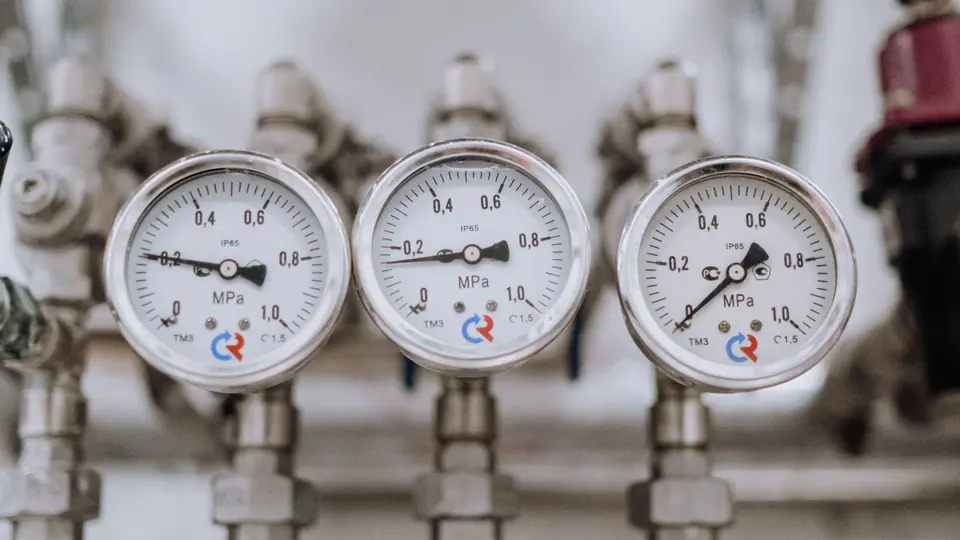

Calculadora de Calibração de Transmissor de Pressão
Confira transmissores de pressão relativa, absoluta ou vácuo com LRV/URV, pressão de referência, indicação e tolerância em percentual do span.

Ferramenta orientativa
Use esta ferramenta para estudo, pré-avaliação e conferência de campo. Ela não substitui levantamento, projeto, memorial, laudo, ART, certificado, normas, manuais de fabricantes, procedimento de calibração, rastreabilidade, avaliação da incerteza nem validação por profissional habilitado.
Dados do ponto
Resultado
| Ponto | Pressão | mA esperado |
|---|
Perguntas frequentes
Isso substitui certificado de calibração?
Não. A ferramenta ajuda a conferir cálculo de erro e pontos esperados, mas o certificado depende de procedimento, padrões rastreáveis e incerteza.
Posso usar para transmissor de vácuo?
Sim, desde que LRV e URV sejam preenchidos com a mesma unidade e sinal correto.
Como conferir o ponto
- Confirme TAG, unidade, LRV, URV e tolerância definida no procedimento.
- Aplique a pressão com referência adequada e aguarde a estabilização.
- Registre indicação em ciclos de subida e descida quando o procedimento exigir avaliação de histerese e repetibilidade.
- Após qualquer ajuste, repita os pontos exigidos antes de liberar o instrumento.
Fórmulas exibidas
Erro = Indicação − Referência
Erro % do span = Erro ÷ |URV − LRV| × 100
EMP = |URV − LRV| × Tolerância % ÷ 100
Status simples: aprovado quando |Erro| ≤ EMP; reprovado quando |Erro| > EMP
O status é uma comparação matemática simples. A regra de decisão, a incerteza e a declaração formal de conformidade devem seguir o procedimento aplicável.